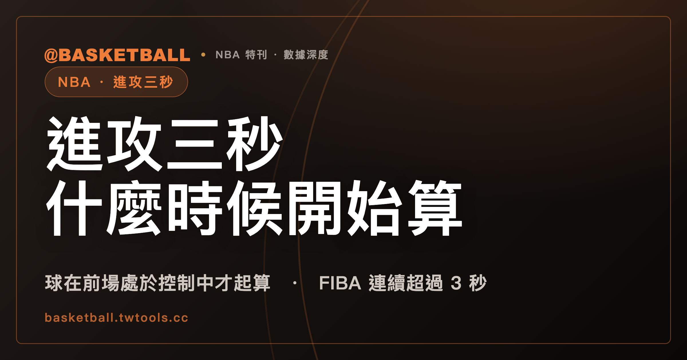

進攻三秒什麼時候開始算？NBA 2025-26 規則書寫：球在進攻球隊的前場處於控制中才起算
依 NBA 2025-26 官方規則書 Rule 10 §VI(c)，進攻三秒的計數要等到球在進攻球隊的前場處於控制中才開始；§VI(b) 對已待不足三秒、第三秒結束時正在投籃動作的球員設有通融。FIBA 2024 版 Article 26.1.1 則寫球員在對手限制區連續停留超過 3 秒，並附上球隊在前場控制活球、比賽計時鐘走動兩個條件。

新手村｜規則入門・進攻三秒
看比賽時會聽到裁判吹進攻三秒，球權跟著判給對手。進攻球員在禁區裡站了多久才算違例？秒數從哪一刻開始算？球員正要投籃的時候，也要照秒數判嗎？這些問題在 NBA 規則書裡各有對應的條文，FIBA 的規則書也有自己的寫法。
本文依據的是 NBA 2025-26 官方規則書與 FIBA 2024 版官方籃球規則（Official Basketball Rules，2024 年 10 月版；FIBA 2026 版規則書於 2026 年 10 月 1 日生效），兩份文字檔的取得日都是 2026 年 9 月 30 日。規則書會隨賽季或規則修訂而更新，之後請以官方最新版為準。
「進攻三秒」「禁區」「三秒區」是中文慣稱。NBA 規則書的條文用的是 free throw lane，FIBA 用的是 restricted area（本文沿用站內既有說法，NBA 寫「禁區」，FIBA 寫「限制區」）。防守三秒是另一條規定，本站的區域聯防與人盯人，該文寫到防守三秒，本文只寫進攻三秒。
讀完之後，你應該能拿一個標明「假設」的情境，自己對著條文判斷：計數開始了沒有、有沒有通融、依哪一份規則書會怎麼處理。
NBA 進攻三秒管的是哪一段禁區？
NBA 2025-26 規則書 Rule 10 Section VI(a) 的原句是：
"An offensive player shall not remain for more than three seconds in that part of his free throw lane between the endline and extended 4’ (imaginary) off the court and the farther edge of the free throw line while the ball is in control of his team."
中文大意是：球在他的球隊控制中時，進攻球員不得在罰球禁區裡、上面英文原句所限定的那一部分停留超過三秒。這段範圍的幾何描述，本文照英文原句引用，不另行解釋。
邊界線算不算在禁區裡，Rule 1 Section I(b) 有另一句：All boundary lines are part of the lane; lane space marks and neutral zone marks are not。邊界線屬於 lane 的一部分，lane space marks 與 neutral zone marks 則不是。這句寫在 Rule 1，與 Rule 10 是規則書的不同條；本文的讀法是把兩處並列來看：邊界線屬於 lane。
三秒的計數在什麼時候才開始？球要在進攻球隊的前場處於控制中
起算的規定在 Rule 10 Section VI(c)：The 3-second count shall not begin until the ball is in control in the offensive team’s frontcourt。三秒計數要等到球在進攻球隊的前場處於控制中才開始。
這一句用到「控制」和「前場」兩個詞。它們在規則書別處各有定義，是不同的條文：
- 控制（control）：Rule 4 Section XVI 寫，球員持球、運球或傳球時，球隊處於 control。同一節也寫了 team control 何時結束：防守隊撥到球，或發生投籃出手時。
- 前場：Rule 4 Section VI(a) 寫，球隊的前場是該隊端線到中線近側邊緣之間的場地，含籃框與界內的籃板部分。
- 前場或後場怎麼判：Rule 4 Section VI(c) 寫，被球員持著的球，在球與人都沒有碰到後場時算在前場；球或人任一碰到後場，就算在後場。
這三條是名詞定義，Rule 10 §VI(c) 是起算款。起算款自己寫的是「球在前場處於控制中之前，計數不開始」。在此之前已經站在禁區裡的球員，先前的秒數要不要歸零，§VI(c) 的原句沒有另外寫。
§VI(c) 還有一句：No violation can occur if the ball is batted away by an opponent。球被對手撥走時，不會構成進攻三秒違例。
已待不足三秒的球員正在投籃，NBA 條文設有通融
Rule 10 Section VI(b) 的首句是：Allowance may be made for a player who, having been in this area for less than three seconds, is in the act of shooting at the end of the third second。對於在這個區域已待不足三秒、第三秒結束時正在投籃動作的球員，可以通融。這一款的前提有兩個：已待不足三秒，並且第三秒結束時正在投籃動作。
同一款接下來還有三句：
- Under these conditions, the 3-second count is discontinued while his continuous motion is toward the basket。在這些條件下，只要他朝籃框的連續動作持續，三秒計數就中止。
- If that continuous motion ceases, the previous 3-second count is continued。連續動作停止，先前的三秒計數繼續。
- This is also true if it is imminent the offensive player will exit this area。進攻球員即將離開這個區域時，同樣適用。
第三句的適用範圍，本文的讀法是限於 §VI(b) 前文所述的情形。前文的前提是「已待不足三秒，第三秒結束時正在投籃動作」，本文引用時把前提一併帶上。
官方評註怎麼補充：接球後要有朝籃框的動作，傳球後立即離開則不鳴哨
規則書後面另有一份 Comments on the Rules，Section I 談的是進攻三秒。它用的詞是 three-second lane，與 Rule 10 §VI(a) 的幾何描述用語不同，本文把它當作補充說明，不當作 §VI(a) 的逐字重述。評註寫了三件事：
- 進攻球員在 three-second lane 已待不足三秒並接到球時：If the offensive player is in the three-second lane for less than three seconds and receives the ball, he must make a move toward the hoop for the official to discontinue his three second count。他必須做出朝籃框的動作，裁判才會中止三秒計數。
- 背身擠壓防守者、想取得更好位置時：If he attempts to back the defensive player down, attempting to secure a better position in relation to the basket, offensive three seconds or an offensive foul must be called。應判進攻三秒或進攻犯規。
- 傳球之後立即移出禁區：If he passes off and immediately makes a move out of the lane, there should be no whistle。不應鳴哨。
「背身進攻」是中文慣稱，評註的原文是 back the defensive player down。
NBA 的罰則是什麼？球權給對方，在罰球線延伸處的邊線發球
Rule 10 Section VI 的罰則寫得很短：PENALTY: Loss of ball. The ball is awarded to the opposing team on the sideline at the free throw line extended。失去球權，球判給對方，在邊線、罰球線延伸處發球。
Rule 6 Section I(e) 另有一份清單，列出球判給對方隊、在最近邊線的罰球線延伸線處界外發球的違例，其中第 (1) 項的名稱就是 Three-seconds (offensive)。
違例與犯規的差別，本站另有違例與犯規的差別，那篇也寫到防守三秒的罰則。
FIBA 2024 版 Article 26 寫的是在對手限制區連續超過 3 秒
FIBA 2024 版的三秒規定在 Article 26。Article 26.1.1 的原句是：
"A player shall not remain in the opponents' restricted area for more than 3 consecutive seconds while the team is in control of a live ball in the frontcourt and the game clock is running."
這一句有三個部分：球員在「對手的」限制區連續停留超過 3 秒；球隊在前場控制活球；比賽計時鐘走動。這三個部分寫在同一句裡。NBA §VI(a) 的原句沒有 consecutive 這個字。
限制區怎麼畫，Article 2.5.3 寫：限制區是場上畫出的長方形區域，由端線、延伸的罰球線與起於端線的線圍成，外緣距離端線中點 2.45 公尺；這些線（端線除外）屬於限制區的一部分。「控制活球」與「前場」在 FIBA 規則書也各有定義：Article 14.1.1 寫，team control 起於該隊球員持有或運著活球，或活球在該球員可處置的狀態；Article 2.4 界定前場範圍，包括對手籃框、界內的籃板，以及對手籃框後方端線所限定的那部分場地。
FIBA 2024 版列了三項通融，以及「雙腳落在限制區外」的站穩標準
Article 26.1.2 開頭寫：必須對下面三種球員通融。
- Attempts to leave the restricted area：試圖離開限制區的球員。
- Is in the restricted area when that player or the team-mate is in the act of shooting and the ball is leaving or has just left the player's hand(s) on the shot for a goal：本人或隊友正在投籃、球正要離手或剛離手（投籃得分）時，人在限制區內。
- Dribbles in the restricted area to shoot for a goal after having been there for less than 3 consecutive seconds：在限制區內連續待不足 3 秒後，運球投籃。
Article 26.1.3 補了一個定義：To be established outside the restricted area, both feet of the player must be placed on the court outside the restricted area。要算在限制區外站穩，球員的雙腳都要落在限制區外的場地上。
罰則不在 Article 26 的條文裡，一般違例罰則在 Article 22.2：球判給對手，在最靠近違例處擲球入界（不含籃板正後方），除非規則另有規定。依本文讀的本機快照，Article 26 有 26.1.1 到 26.1.3 三款，沒有罰則款。這是本文的讀法：NBA 的罰則寫在 Rule 10 §VI 本身，FIBA 的罰則引自 Article 22.2，兩處各自逐字，不合併成一句。
兩份規則書各寫各的：對照表
下表左右兩欄各自寫自己的用詞與條件，不逐列配對。
| 項目 | NBA 2025-26 規則書 Rule 10 §VI | FIBA 2024 版 Article 26 |
|---|---|---|
| 區域用詞 | free throw lane 的一部分（端線與延伸 4 英尺之間、到罰球線遠側邊緣） | restricted area（對手的） |
| 停留條件 | 停留超過三秒，球在其球隊控制中（§VI(a)） | 連續停留超過 3 秒，球隊在前場控制活球，比賽計時鐘走動（26.1.1） |
| 起算 | 球在進攻球隊前場處於控制中才開始（§VI(c)） | 26.1.1 把前場控球與計時鐘走動寫成停留條件 |
| 通融 | 已待不足三秒、第三秒結束時正在投籃動作（§VI(b)） | 試圖離開、投籃球離手、連續待不足 3 秒後運球投籃（26.1.2） |
| 罰則 | Rule 10 §VI 本身：失去球權，罰球線延伸處邊線發球 | Article 22.2 的一般罰則：球判給對手，最近違例處擲球入界 |
NBA 的 §VI(b) 寫「即將離開該區」（imminent the offensive player will exit this area），FIBA 的 26.1.2 寫「試圖離開」（Attempts to leave）。兩處字面不同，本文的讀法是不主張兩者等價，各自照原句判斷。
自己判一次：五個假設情境
下面的情境都是假設，情境裡每一步都對著上面引用的條文。
情境一（NBA 2025-26）。 假設甲隊球員在後場持球，甲隊另一名球員站在禁區裡，已經過了 5 秒。依 Rule 10 §VI(c)，計數要等到球在進攻球隊前場處於控制中才開始；依 Rule 4 §VI(c)，被持著的球與人任一碰到後場，就算在後場。所以此刻球在後場，三秒計數還沒有開始。球進入前場、處於控制中之後，先前這 5 秒要怎麼處理，§VI(c) 的原句沒有寫，不能只憑這一條下結論。
情境二（NBA 2025-26）。 假設甲隊球員在禁區裡計數已到 2 秒，球被乙隊球員撥走。依 §VI(c) 次句，球被對手撥走時不會構成違例。
情境三（NBA 2025-26）。 假設某球員符合 §VI(b) 首句的前提（已待不足三秒，第三秒結束時正在投籃動作），計數在他開始朝籃框動作前記到 2 秒。依 §VI(b)，朝籃框的連續動作持續時計數中止；動作停止後，先前的計數繼續，也就是從 2 秒接著算；如果他再待 1.5 秒，累計 3.5 秒，超過 §VI(a) 寫的三秒。2 加 1.5 等於 3.5。
情境四（FIBA 2024）。 假設甲隊在前場控制活球，比賽計時鐘走動，某球員在乙隊的限制區裡連續待了 4 秒，也沒有符合 26.1.2 三項通融的情形。依 Article 26.1.1，連續超過 3 秒，符合這一款寫的描述；4 大於 3。一般罰則依 Article 22.2：球判給乙隊，在最靠近違例處擲球入界。
情境五（FIBA 2024）。 假設某球員一隻腳踏出限制區、另一隻腳仍在區內。依 Article 26.1.3，這不算在限制區外站穩，因為雙腳都要落在限制區外的場地上。另一個假設：比賽計時鐘沒有走動時，26.1.1 的條件之一沒有成立，那一刻不適用這一款的描述。
常見問題
NBA 2025-26 規則書中，球還在後場時，進攻三秒會開始算嗎？
依 NBA 2025-26 規則書 Rule 10 §VI(c)，三秒計數要等到球在進攻球隊的前場處於控制中才開始。球在後場的時候，計數尚未開始。前場控制之前已經在禁區裡的球員，先前秒數怎麼處理，§VI(c) 原句沒有寫。
NBA 2025-26 規則書中，已在禁區待不足三秒又正在投籃的球員，會被判進攻三秒嗎？
依 Rule 10 §VI(b)，對於在該區已待不足三秒、第三秒結束時正在投籃動作的球員，可以通融；在這些條件下，只要朝籃框的連續動作持續，計數中止，動作停止則先前計數繼續。這一款寫的是上述前提下的通融，前提不成立時，這一款的通融不適用。
FIBA 2024 版的進攻三秒與 NBA 2025-26 一樣嗎？
兩份規則書各寫各的。FIBA 2024 版 Article 26.1.1 寫的是球員在對手限制區連續停留超過 3 秒，並且球隊在前場控制活球、比賽計時鐘走動；NBA 2025-26 Rule 10 §VI(a) 寫的是進攻球員在禁區的那一部分停留超過三秒，球在其球隊控制中。通融款兩邊的措辭也不同（NBA §VI(b)、FIBA 26.1.2）。2026 年 10 月 1 日生效的 FIBA 2026 版規則書不在本文依據範圍內。
進攻三秒違例之後，比賽怎麼繼續？
依 NBA 2025-26 規則書 Rule 10 §VI，失去球權，球判給對方，在邊線、罰球線延伸處發球。依 FIBA 2024 版 Article 22.2，違例的一般罰則是球判給對手、在最靠近違例處擲球入界（不含籃板正後方），除非規則另有規定。
資料來源
- NBA Official Playing Rules 2025-26 賽季規則書：Rule 10 Section VI（進攻三秒）、Rule 6 Section I(e)、Rule 4 Section VI 與 Section XVI、Rule 1 Section I(b)、Comments on the Rules Section I。本機保存的全文文字檔，取得日 2026 年 9 月 30 日，無可點擊網址。
- FIBA Official Basketball Rules 2024（2024 年 10 月版；2026 版於 2026 年 10 月 1 日生效）：Article 2.4、2.5.3、14.1.1、22.2、26。本機保存的全文文字檔，取得日 2026 年 9 月 30 日，無可點擊網址。